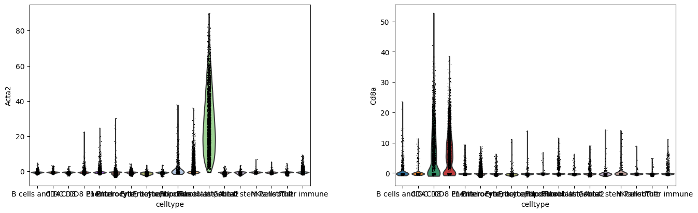
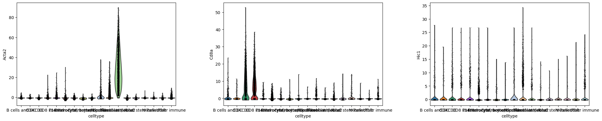
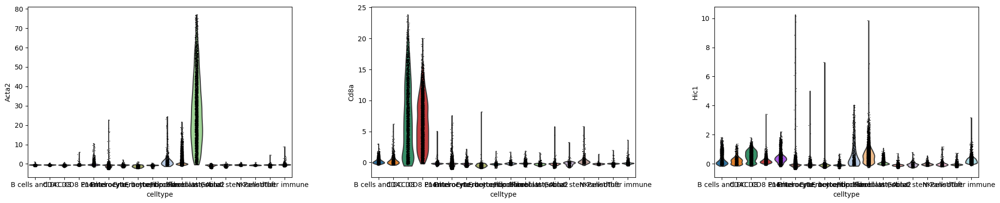

import scanpy as sc
import anndata as ad
import numpy as np
import pandas as pdAnndata Zarr export
Run MAGIC and export the anndata in the zarr format for the Vitessce browser
The browser can be found here: https://merscope.heeg.io
The images are exported in a separate script as an ome tiff. All files are synced with a cloud storage.
This script also contains a few fixes to export the cell boundaries.
adata = ad.read_h5ad("anndata_annotated.h5ad")Run Magic
adataAnnData object with n_obs × n_vars = 105262 × 499
obs: 'x', 'y', 'cluster', 'n_transcripts', 'density', 'elongation', 'area', 'avg_confidence', 'cell_shape', 'n_genes', 'n_genes_by_counts', 'total_counts', 'leiden', 'Ucell_Main.Epithelia', 'Ucell_Main.Stroma', 'Ucell_Main.Immune', 'Ucell_Main.Endothelia', 'Ucell_Main.Neuronal', 'Ucell_CD8_Tcell', 'Ucell_CD4_Tcell', 'Ucell_Treg', 'Ucell_NK_Tcell', 'Ucell_TRM_CD8_Tcell', 'Ucell_TCM_CD8_Tcell', 'Ucell_ILC', 'Ucell_TEM_Tcell', 'Ucell_TE_Tcell', 'Ucell_P14', 'Ucell_B_cell', 'Ucell_cDC1', 'Ucell_Neutrophil', 'Ucell_Macrophage', 'Ucell_TA', 'Ucell_Enterocyte_low', 'Ucell_Enterocyte_med', 'Ucell_Enterocyte_high', 'Ucell_Enterocyte_tip', 'Ucell_Endothelia', 'Ucell_ISC', 'Ucell_Paneth', 'Ucell_Goblet', 'Ucell_Tuft', 'Ucell_Enteroendocrine', 'Ucell_Ncam1+_fibroblasts', 'Ucell_Fibroblast_progenitor', 'Ucell_Pdgfra+_fibroblasts', 'Ucell_Acta2+_fibroblasts', 'Ucell_Pdgfrb+_fibroblasts', 'Ucell_Proliferating', 'Ucell_Lymphatic', 'Ucell_Astrocytes', 'Ucell_Neuron', 'Ucell_Microglia', 'celltype'
var: 'n_cells', 'n_cells_by_counts', 'mean_counts', 'pct_dropout_by_counts', 'total_counts', 'means', 'variances', 'residual_variances', 'highly_variable_rank', 'highly_variable'
uns: 'celltype_colors', 'dendrogram_leiden', 'hvg', 'leiden', 'leiden_colors', 'neighbors', 'pca', 'pearson_residuals_normalization', 'points', 'umap'
obsm: 'X_pca', 'X_umap', 'spatial', 'unrolled'
varm: 'PCs'
layers: 'raw', 'sqrt_norm'
obsp: 'connectivities', 'distances'adata.Xarray([[-0.18696232, -0.4049479 , 0.24218531, ..., -0.44860196,
-0.3415596 , -1.6352955 ],
[-0.16935983, -0.36686456, -0.7998022 , ..., -0.24956763,
-0.30942446, -0.8262355 ],
[-0.16461276, 2.444168 , -0.77751535, ..., -1.095034 ,
-0.300757 , -1.4441031 ],
...,
[-0.03107334, -0.06734505, -0.14717919, ..., -0.207884 ,
-0.05679015, -0.27534527],
[-0.02491414, -0.0539966 , -0.11801044, ..., -0.16669086,
-0.04553368, -0.22079724],
[-0.01856993, -0.04024696, -0.08796251, ..., 7.9226847 ,
-0.03393896, -0.16459039]], dtype=float32)sc.pl.violin(adata=adata, keys=['Acta2', 'Cd8a'], groupby='celltype', use_raw=False)
sc.external.pp.magic(adata, name_list='all_genes', n_jobs=12, verbose=True)Calculating MAGIC...
Running MAGIC on 105262 cells and 499 genes.
Calculating graph and diffusion operator...
Calculating PCA...
Calculated PCA in 4.83 seconds.
Calculating KNN search...
Calculated KNN search in 367.73 seconds.
Calculating affinities...
Calculated affinities in 366.41 seconds.
Calculated graph and diffusion operator in 739.08 seconds.
Calculating imputation...
Calculated imputation in 5.58 seconds.
Calculated MAGIC in 744.78 seconds./home/max/QnapSync/Documents/Postdoc/Lab/Projects/Merscope/Slide01_Doudenum/.venv/lib/python3.10/site-packages/magic/utils.py:145: FutureWarning: X.dtype being converted to np.float32 from float64. In the next version of anndata (0.9) conversion will not be automatic. Pass dtype explicitly to avoid this warning. Pass `AnnData(X, dtype=X.dtype, ...)` to get the future behavour.
data = anndata.AnnData(data)adata.raw.Xarray([[-0.18696232, -0.4049479 , 0.24218531, ..., -0.44860196,
-0.3415596 , -1.6352955 ],
[-0.16935983, -0.36686456, -0.7998022 , ..., -0.24956763,
-0.30942446, -0.8262355 ],
[-0.16461276, 2.444168 , -0.77751535, ..., -1.095034 ,
-0.300757 , -1.4441031 ],
...,
[-0.03107334, -0.06734505, -0.14717919, ..., -0.207884 ,
-0.05679015, -0.27534527],
[-0.02491414, -0.0539966 , -0.11801044, ..., -0.16669086,
-0.04553368, -0.22079724],
[-0.01856993, -0.04024696, -0.08796251, ..., 7.9226847 ,
-0.03393896, -0.16459039]], dtype=float32)sc.pl.violin(adata=adata, keys=['Acta2', 'Cd8a', 'Hic1'], groupby='celltype')
sc.pl.violin(adata=adata, keys=['Acta2', 'Cd8a', 'Hic1'], groupby='celltype', use_raw=False)
adata = adatascale = 3.08657 # apply the scale
# and round to two decimals to make the file a little smaller (saves ~250MB)
adata.uns['points'].groupby('gene').apply(lambda x: (x[['x', 'y']].to_numpy()*scale).round(2)).to_json('/home/max/Desktop/vitesse/data/json/molecules.json')import zarradata.obs['leiden'] = adata.obs.leiden.astype('int32')# adata.obs = adata.obs.rename(columns={"cell type": "cell_type"})
# adata.obs['cell_type'] = adata.obs['cell_type'].astype('S16')gpd.GeoSeries.from_wkt(np.array(adata.obs.cell_shape))0 POLYGON ((121.907 1410.945, 125.958 1414.014, ...
1 POLYGON ((119.717 1412.486, 118.002 1416.133, ...
2 POLYGON ((145.004 1410.353, 145.535 1406.199, ...
3 POLYGON ((143.044 1401.912, 142.227 1402.037, ...
4 POLYGON ((141.254 1406.968, 140.953 1407.200, ...
...
105257 POLYGON ((5592.448 3571.183, 5591.485 3570.595...
105258 POLYGON ((3875.762 3385.923, 3875.093 3384.950...
105259 POLYGON ((1189.708 5137.589, 1190.759 5135.508...
105260 POLYGON ((3923.678 6011.807, 3922.497 6012.943...
105261 POLYGON ((3021.903 4097.709, 3022.185 4096.938...
Length: 105262, dtype: geometryimport geopandas as gpd
from shapely.geometry import Polygon, mapping
test = gpd.GeoSeries.from_wkt(np.array(adata.obs.cell_shape)).apply(lambda x: np.array(mapping(x)['coordinates'])[0].astype('float32'))TypeError: Non geometry data passed to GeoSeries constructor, received data of dtype 'category'testadata.uns['poly'] = [np.resize(t, (24,2))*scale for t in test]
#adata.uns['poly'] = testadata.uns['poly'] = adata.uns['poly'].copy()adata.obsm['spatial'] = adata.obsm['spatial']*scale
adata.obsm['spatial'] = adata.obsm['spatial'].copy()adata = adata.copy()dims = [p.shape[0] for p in adata.uns['poly']]
[d for d in dims if d < 5]adata.write_zarr('/home/max/Desktop/vitesse/data/merscope.zarr', [adata.shape[0], 10])adata.obsm['spatial'][1362]